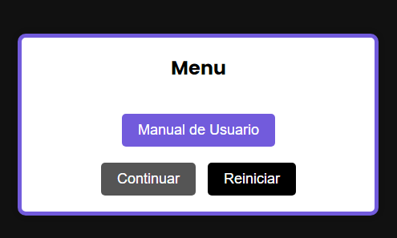
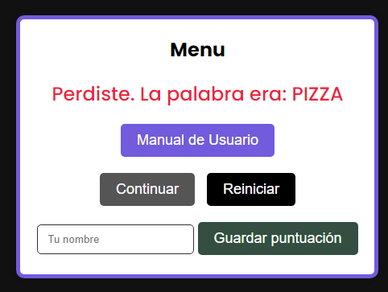

Manual de Usuario
Introducción
Este manual te guiará a través de las funcionalidades del juego Ahorcadaso, explicando cómo jugar, las reglas, y las principales características.
Requisitos del Sistema
- Navegador web compatible (Chrome, Firefox, Edge)
- Conexión a Internet
- Resolución de pantalla mínima de 1024x768
Preguntas Frecuentes
Si tienes problemas con el juego, consulta nuestra sección de Preguntas Frecuentes (FAQ)
Cómo Jugar
- Haz clic en "Jugar" en la página de inicio.
- Elige una letra para intentar adivinar la palabra oculta.
- Por cada letra incorrecta, perderás una vida.
- Las vidas se reinician cada vez que adivinas una palabra
- Al acertar la palabra se habilita el boton de "Continuar" donde te muestra la proxima palabra que tiene que ser descubierta
- El objetivo es adivinar la mayor cantidad de palabras hasta quedarte sin vidas y equivocarte la palabra
- En cualquier momento podes reiniciar la partida con el boton "Reiniciar" 


Puntuación
La puntuación se calcula con base en el número de palabras y letras adivinadas y el tiempo transcurrido. Al finalizar una partida, puedes guardar tu puntuación y compararla con el top 5 jugadores.

Al Errar la palabra te aparece un Formulario para poner tu nombre y un boton "Guardar Puntuación" para guardar
Reglas del juego
- Tienes 6 intentos incorrectos por letrs antes de que se complete el ahorcado y pierdas el juego.
- Cada letra correcta te da 20 puntos.
- Cada letra incorrecta te saca 10 puntos y perderás una vida.
- Cada palabra hacertada te da 50 puntos
- Al poner continuar despues de poner continuar se suman los puntos de la palabra y de los segundos

Controles
| Acción | Control |
|---|---|
| Elegir letra | Hacer clic en una letra disponible en pantalla o usa el teclado |
| Guardar puntuación | Botón "Guardar Puntuación" |
| Reiniciar partida | Botón "Reiniciar" |
FAQ - Preguntas Frecuentes
¿Cómo reinicio el juego?
Para reiniciar el juego, haz clic en el botón "Reiniciar" que aparece después de finalizar una partida.
¿Cómo se calcula la puntuación?
La puntuación se calcula en base a la rapidez con la que adivinas las palabras y cuántas adivinaciones correctas haces.